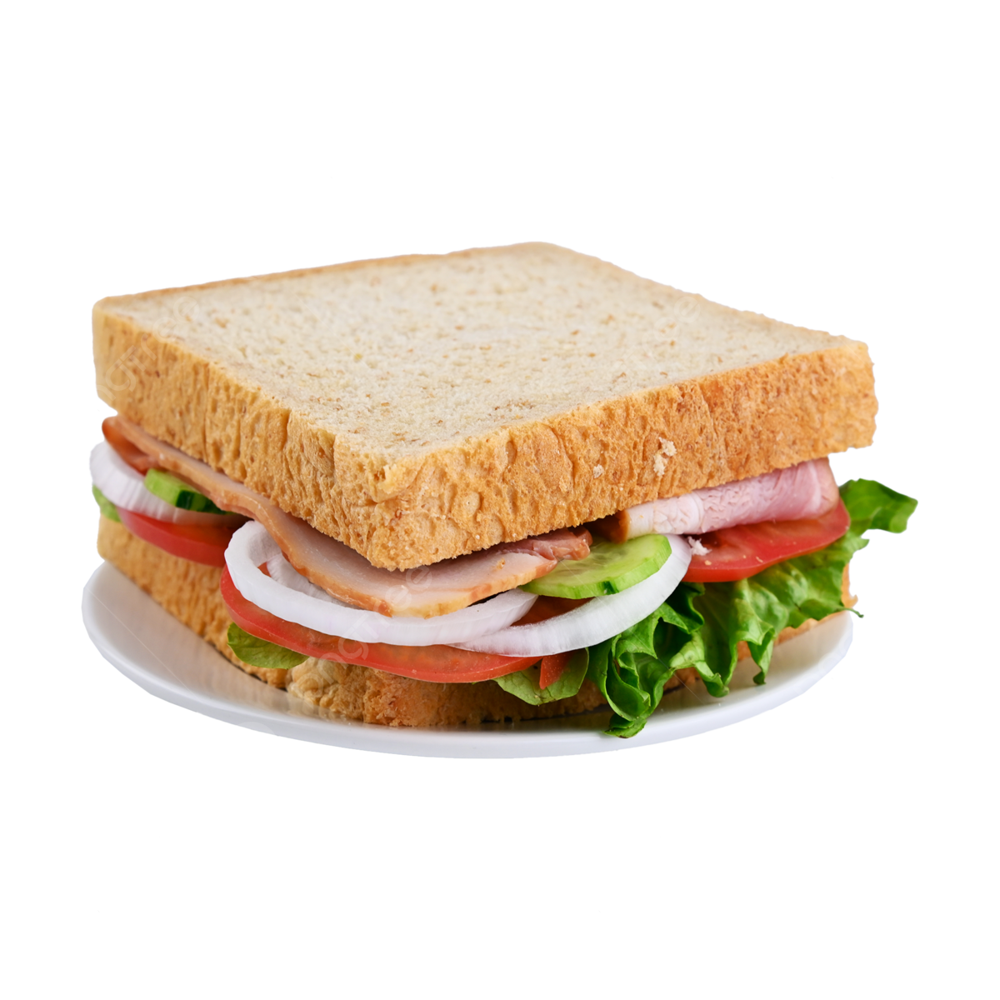

<Kanapka
Składniki
- jajka
- masło
- sól
- pieprz
- szynka
- ser
Sposób wykonania
- Jajka ugotować na twardo, obrać ze skorupek i pokroić w plasterki.
- Masło rozpuścić na patelni, dodać jajka, posolić, popieprzyć i wymieszać.
- Szynkę pokroić w cienkie plasterki.
- Ser pokroić w cienkie plasterki.
- Kromki chleba posmarować masłem, na jednej połówce ułożyć plasterki szynki, na drugiej połówce plasterki sera, na ser położyć jajka, przykryć drugą połówką chleba.
- Kanapki podawać na ciepło.
